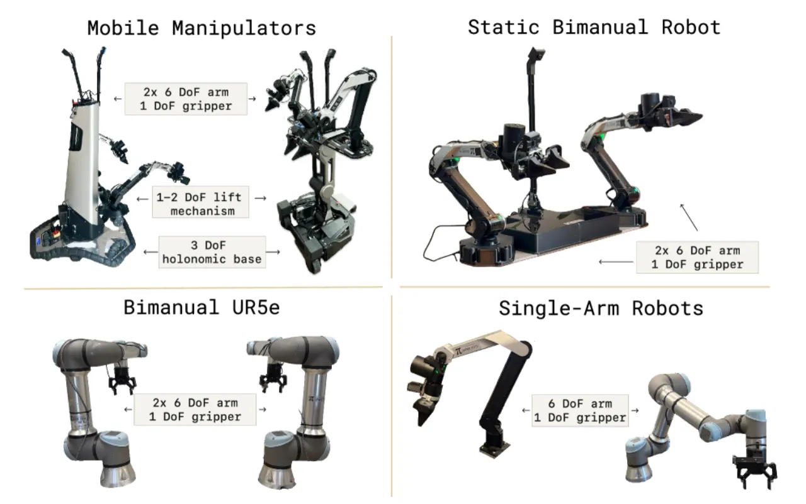
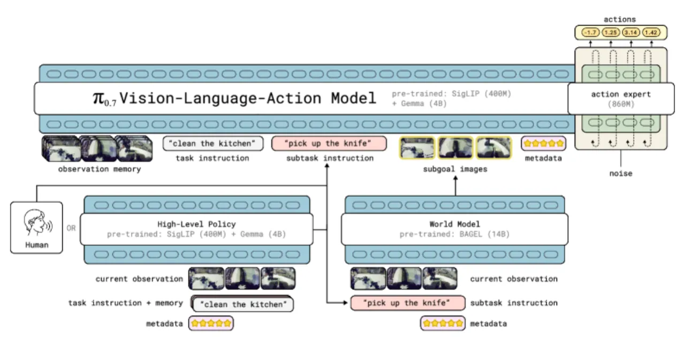
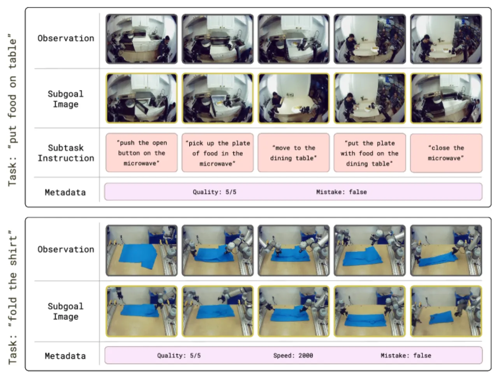
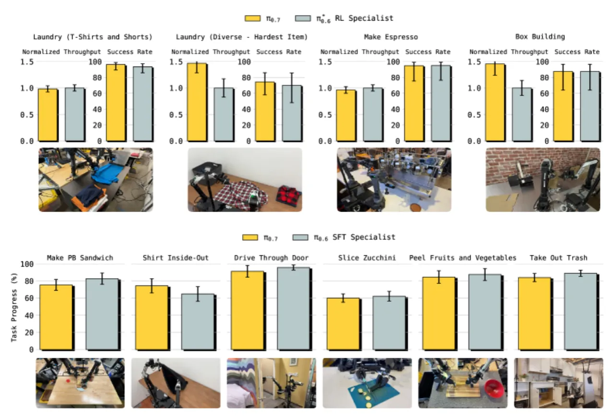
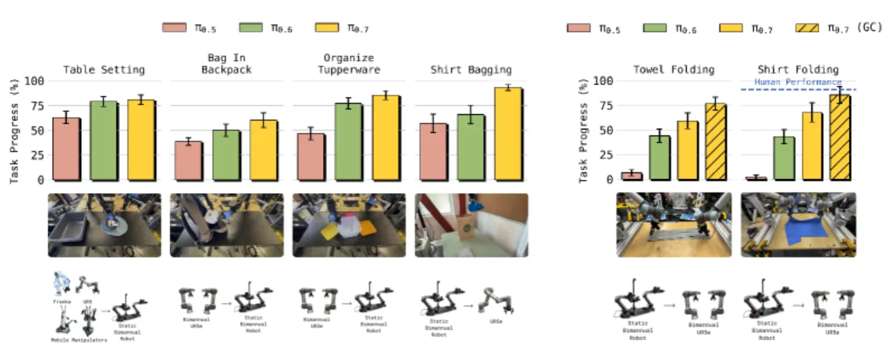
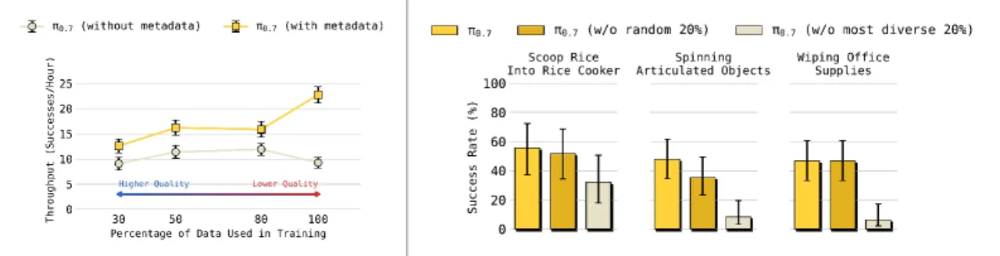

π₀.7 是一个约 50 亿参数的 vision-language-action 模型，通过在训练时引入多样化上下文条件——包括子任务自然语言指令、子目标图像和 episode 元数据（速度、质量评分、是否失误）——使模型能够消歧异构数据集，并涌现出组合泛化能力。其在无需任务特定微调的情况下，在折叠衣物、制作咖啡、跨形态灵巧操作等高难度任务上与 RL 专家模型持平或更优。
尽管大型语言模型已展现出强大的组合泛化能力——能够将已学知识以前所未有的方式组合应用——现有机器人基础模型却在这一核心能力上严重缺失：它们往往需要对每项新任务进行专项微调，且无法在陌生环境或新形态机器人上零样本泛化。
"Prior VLA models lack robust compositional generalization and often require task-specific fine-tuning despite being trained on large datasets."

作者的核心假设是：在训练时提供关于"做什么"和"怎么做"的详细上下文信息，可以消除异构数据集中的歧义，进而解锁涌现式泛化能力（emergent generalization）。这种能力使得模型能够：
π₀.7 的核心创新在于多样化上下文条件训练（diverse context conditioning）：通过在训练时同时提供子任务自然语言指令、子目标图像和 episode 元数据，使模型能够理解并利用各种质量和来源的训练数据，并在推理时通过灵活配置这些条件来引导模型行为。


训练时的上下文由四类信息构成，每类均以随机概率 dropout：
π₀.7 的训练数据涵盖前所未有的多样性：多种机器人平台的遥操作演示数据、包含失败和次优行为的自主推演数据、以人为中心的视频数据、以及网络非机器人数据（物体定位、VQA、文字预测、视频-语言任务）。值得注意的是，模型通过纳入 RL 专家模型的评估数据来蒸馏其行为，而无需重新采集低层动作数据。
推理时固定配置（Algorithm 1）：控制模式始终提供；速度设为任务 episode 长度的第 15 百分位（偏快）；质量始终设为最高（5 分）；失误标记设为 false。子任务指令由高层策略或人类监督提供；子目标图像每 4 秒刷新一次或在意图改变时更新。每次推理通过 5 步去噪生成 50 步动作 chunk，执行其中 15–25 步；支持 classifier-free guidance（CFG），权重 β ∈ {1.3, 1.7, 2.2}。
实验评估覆盖四个核心维度：开箱即用灵巧操作性能、指令跟随能力、跨形态迁移、以及组合任务泛化，所有任务均与 π₀.5 和 π₀.6 等基线模型对比。
π₀.7 无需任何任务特定后训练，即可在多个高难度灵巧操作任务上与 RL 微调专家模型（π₀.6*）媲美：

| 任务 | π₀.6*（RL 专家） | π₀.7（本文） | 备注 |
|---|---|---|---|
| Espresso Making | 基线 | 相当 | 归一化吞吐量对比 |
| Laundry Folding（T-shirt & Shorts） | 基线 | 吞吐量更高 | 超过 RL 专家吞吐量 |
| Box Building | 基线 | 吞吐量更高 | 原始吞吐量超基线 |
| Reverse Bussing（反常识） | <20% success | 70–80% | π₀.7 显著超越 |
| Long-horizon Air Fryer Coaching | π₀.6: ~10–20% | ~75–85% | 带子目标图像可达 85% |
| 跨形态 T-shirt 折叠（UR5e） | 人类 tele-op: 80.6% | 80% | 匹配 10 名人类遥操作员 |
在 6 个全新环境（4 个未见过的厨房 + 2 个未见过的卧室）、14 种场景下，每场景 3–6 条开放式指令评估，π₀.7 整体成功率显著优于 π₀.5 和 π₀.6。对于包含复杂指代关系的指令（如 "pick up the fruit on the largest plate"），π₀.7 相对基线的优势更为突出；配合子目标图像（π₀.7 GC）可进一步提升。数据集偏见破解测试（"Reverse Fridge to Microwave"）中，子目标图像对成功率至关重要。

在完全无训练数据的短时序任务上（舀米饭、转动风扇/齿轮、擦拭物体、按 French press 活塞等），π₀.7 零样本成功率达 55–75%，且语言条件与子目标图像条件性能相当。通过语言 coaching 在未见长时序任务（装载/卸载空气炸锅、制作吐司贝果）上，π₀.7 达到约 70–85% 成功率（π₀.6 约 10–20%）。进一步地，在 coaching 数据上训练高层策略后，可实现自主执行，性能仅比有人 coaching 低约 5–10%。

关键消融结论：
未见任务和形态的成功率为 60–80%，相比分布内任务的 >90% 仍有明显差距。这表明即使是 π₀.7，在真正陌生的场景下仍无法做到完全可靠。
随着训练数据规模和多样性极大扩展，准确区分"见过"和"未见过"的任务边界变得非常困难。某些技能可能以不同标签或作为其他任务的附带行为出现在数据中，这使得泛化声明的可靠性难以精确评估。
模型实现组合泛化的主要途径可能是重新组合已有行为，而非发现真正全新的能力。作者认为这在功能上是可接受的，但这一局限性值得在更严格的测试条件下进一步审视。
对于复杂的长时序任务，模型仍依赖详细的步骤级语言 coaching 或已训练好的高层策略，尚不能完全依赖粗粒度指令自主完成任务。